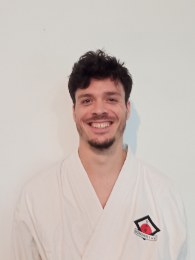
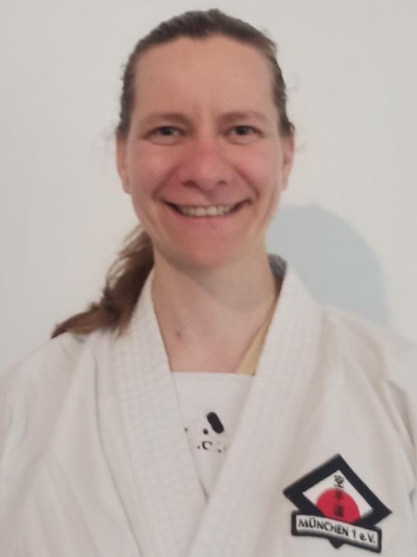
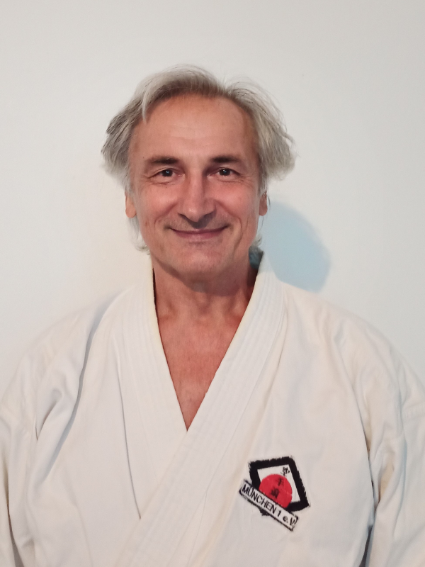
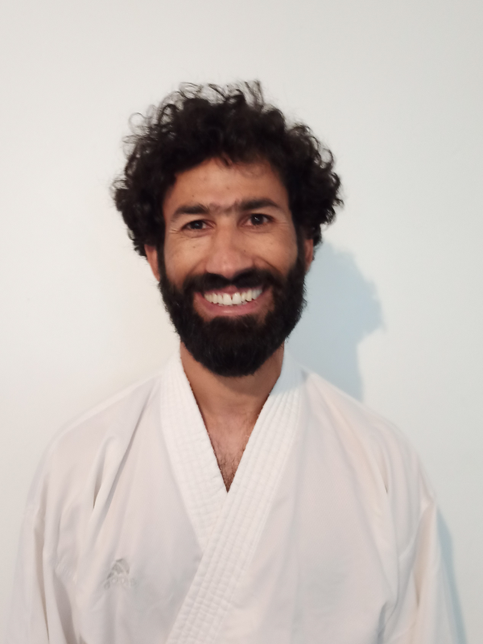
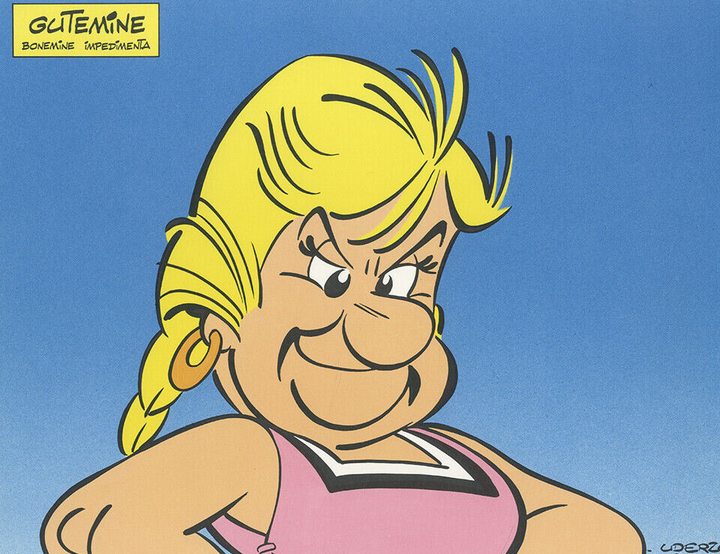
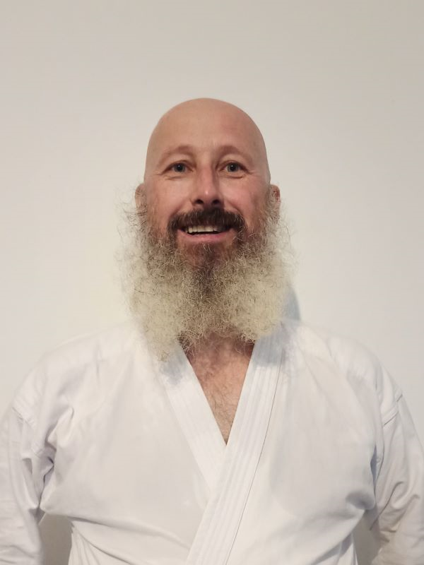

1. Vorstand
Jakob Bahret0176-34621216 Jakob hat in Dar es Salaam mit Karate angefangen.
Wenn er nicht gerade von der Bayrischen oder Deutschen Meisterschaft Pokale für uns heimbringt, ist er am Laufen, Klettern, Bouldern, Surfen, Tischtennis spielen, Radfahren, Skitouren gehen oder Schwimmen.
Nebenbei baut er als Architekt schöne Häuser.

2. Vorständin
Tanja Stocker0176-81515532 Tanja begeistert am Karate, dass es eine schöne Mischung aus Team- und Einzelsport ist.
Alle können in ihrem eigenen Tempo lernen, aber man hilft sich und lernt voneinander. Das ermöglicht ein unterstützendes Miteinander.
"Im Karate hat die gegenseitige Wertschätzung und das Teilen von Wissen einen zentralen Stellenwert. Das finde ich sehr motivierend."

Sportwart
Kruno Hrgovcic0171-2316969 Kruno ist unser Cheftrainer. Seit bereits über 30 Jahren sorgt er zusammen mit den anderen Vorstandsmitgliedern und Trainern für ein gutes, sportliches Trainieren und reibungsloses Funktionieren unseres Vereines.
Kruno kämpfte für das kroatische Nationalteam und wurde unter anderem mehrfach Kroatischer und später mehrfach Bayerischer Meister.
Er besitzt die Prüfer- sowie Übungsleiterlizenz und hat in unserem Verein bereits über 2000 Trainings ehrenamtlich gehalten.
"Karate hat mein Leben positiv beeinflusst. Ich lernte dabei viel über Leistung und Charakter, gewinnen und verlieren. Das dürfen auch meine Schülerinnen und Schüler von mir lernen."

Jugendwart
Nooragha Quraishi0176-21358621 Trainer Noori hat als Kind in Afghanistan mit dem Shotokan Karate angefangen.
Er nahm an nationalen und internationalen Meisterschaften teil und gewann mehrere Turniere, auch mit der afghanischen Nationalmanschaft in der Disziplin Kumite.
Noori ist bereit uns auch langfristig als Trainer zu unterstützen, was für unseren Verein von großer Bedeutung ist.
"Karate ist mein Leben."

Kassenwart
Christina Müller0157-73758314 Christina macht seit 2002 Karate und unterstützt das Trainerteam in den Bereichen Kihon und Kata.
Sie tritt auch bei Wettkämpfen der Masterklasse an und gewinnt Medaillen in Kata und Kumite.

Webmaster
Harry Saltzman0173-8237510 Harry möchte der älteste Schwarzgurt bei Olympia werden.
Er hat noch keinen schwarzen Gürtel, und Karate ist gerade nicht olympisch.
Aber er kann warten. Konfuzius hat Recht:
"Erzürne nicht, setze dich ans Ufer des ruhigen Flusses und warte, bis die Leichen deiner Feinde vorbeitreiben."